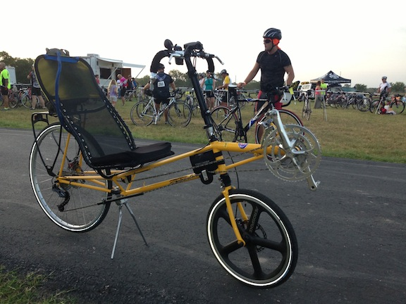

Tour de Jalapeño - Ride Report P-38
04 Aug 2013
Well, today was my first, and maybe my last, charity ride on the Lightning P-38 (because tomorrow it’ll be an F-40 streamliner)!

I was a little nervous because I had only ridden the P-38 10 miles yesterday on an around the neighborhood shakedown/familiarization cruise.
Three hours and twelve minutes later I felt very comfortable after the 50 miles Tour de Jalapeño.
Although the rides starts relatively close to San Marcos TX it is actually in the middle of nowhere and the ride itself is very nice on little traveled roads making for a very scenic and relaxing ride. There were about 350 riders and I was the only recumbent. My speed was not all that great, but out of about 70 people that rode the 50 miler (the longest route for the ride), I’d say only about 5 to 10 finished ahead of me. A lot of cars were still in the parking lot when I finished.
Lots of questions about the bike. It seems like the P-38 looks closer to an upright bike (than the Musashi or Baron) so there were more questions.
After I had finished the race (and used the facilities) a medium aged guy rides up on his high-end racing bike decked out in his full racing kit and says “How fast is that thing” with a little bit of attitude. I reply: “Well I just finished the 50 miler a few moments ago, did you do the 50 miler?”. He said “Yes”. I reply: “Well I guess it is just a little bit faster than your bike then.”
The P-38 (F-40) came with 175 mm cranks on the front. I mean, they’re huge. It is like having a windmill on the front of the bike. You have to be pretty careful of heal strike when turning. Fortunately riding the Musashi and Baron the last couple of years has ingrained in me to extend the inside leg when turning and I have not had any problems with the P-38 and turning. The 175 mm cranks however came in real handy today.
I was approaching a stop sign from about 40 yards away. In front of me were about 15 uprights. A policeman was stopping traffic allowing for a blow through at the right hand turn at the stop sign. The last 20 yards to the stop sign were extremely uphill and then again another 2-3 feet extreme rise to make the right hand turn up onto a freshly paved road. Having done this scenario on many rides before I’m edging towards the middle/left side of the road to take the corner very wide were the grade is the least steep. I’d built up some speed so that I could easily coast through the corner. Suddenly the lead upright rider can’t peddle any more, clipped in they fall over taking out another 3 riders before the other riders and come to a stop. The hill is so steep two more people can’t get unclipped and stable enough before they also end up on the ground. By this time I’m only a few feet away and I’ve slowed way down to a near stop to not plow into the back of them. I’m still clipped in, I’m probably going to join the road rash party going on. The P-38 turns on a dime and I cut over to the left hand lane of on coming traffic (remember the police have stopped all on coming traffic and the lane is open). I’m still in the middle front chainring because I had built up some speed and was not expecting the upright bikes to come to a stop. Like doing a leg press I stomp on that large 175mm front crank and my butt presses against the seat back. From a near track stand the bike actually starts moving forward up the extreme incline and I swing out to the left, around the pile up and then onto the road leaving to the right. I hear everybody behind me getting up with people saying they are ok. I know they are going to hurt later.
Around the 25 mile marker I started to get cramps in my calfs. Because of my recent traveling this is the longest ride I’ve done in the last 7 weeks. I get off the bike and walk a small hill to loosen up my cramps. The rest of the ride I’m just freewheeling it to try and finish without cramping again.
I’d definitely do this ride again.
Next ride - (probably) 10 August Thrall of a Pop - Georgetown A short brevet (populaire)